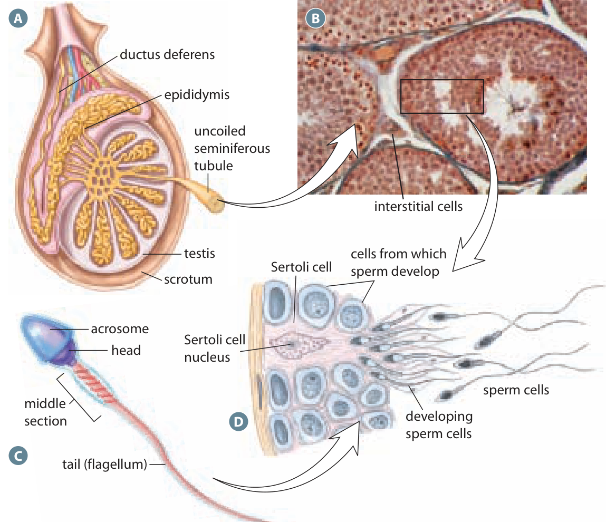
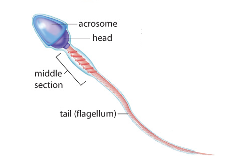

Different cells share the same testis
A produces sperm and releases . That does not mean one kind of cell does both jobs. To explain sperm production, we need to look inside the organ and separate the developing reproductive cells from the cells that support and regulate them.
is the process of producing sperm in the , the tightly coiled tubes inside a testis. These developing reproductive cells are also called germ cells. They belong to a lineage in which successive stages lead toward sperm. More developed cells are generally closer to the , the inner space of the tubule, where sperm are released.
A Sertoli cell lies within a seminiferous tubule and supports the developing cells. It supplies nourishment and helps maintain their local environment. It remains a supporting cell rather than becoming a sperm. , also called Leydig cells, lie between the tubules and release testosterone. Inside a tubule and between tubules are different locations with different functions.
In the figure, begin at A with the organ and its coiled tubules. The enlarged view B shows sections through tubules; the interstitial-cell label points to tissue between them. In D, find the tall Sertoli cell beside the smaller developing cells, then follow the developing cells toward the sperm at the right. The broad curved arrows connect enlarged or related views; they do not mean that an interstitial cell turns into a Sertoli cell or a sperm. Panel C shows the specialised cell produced by the reproductive-cell lineage.
Inside the testis

Developing sperm and Sertoli cells occupy the tubules; interstitial cells lie between tubules. Inquiry into Biology, p. 480.Two divisions, followed by a change of form
The starting reproductive cells are called ; one is a spermatogonium. They divide by mitosis, a cell-division process that maintains a supply of starting cells. Some descendants develop into . Before a primary spermatocyte begins meiosis, its DNA has been copied.
Meiosis is a process with two successive divisions. Meiosis I takes one primary spermatocyte to two . Meiosis II divides each secondary spermatocyte, giving four in total. Count the cells at each step: one becomes two, then each of those two becomes two, so 2 × 2 = 4. There is no extra DNA-copying stage between meiosis I and meiosis II. After meiosis I, each secondary spermatocyte has one chromosome set, so it is already haploid. Each chromosome still has two attached copied parts, called sister chromatids. These separate during meiosis II without another round of DNA copying.
The four spermatids are haploid: each normally contains one set of 23 chromosomes in humans. Haploid describes the chromosome-set number, not the cell's shape. Meiosis distributes inherited chromosome material into different combinations, so equal chromosome counts do not make the resulting cells genetically identical. The detailed chromosome movements and sources of variation will be examined with meiosis later.
Spermatids then undergo : they become specialised in structure and function. They develop features such as a compact head and a . Differentiation is a change of form, not a third meiotic division, and it does not halve the chromosome set again. A group of four spermatids can therefore become four sperm without first producing eight cells.
The sequence to follow is primary spermatocyte, two secondary spermatocytes, four haploid spermatids, then specialised sperm. The teacher slide's phrase 'two cycles of meiosis' should be read as two divisions within one meiosis. Spermatogonia, and interstitial cells are not alternative names for the four final products.
A sperm's parts have different jobs
Look at the sperm figure from its head toward its tail. The head contains a nucleus carrying the haploid chromosome set. The is the cap at the front of the head. Its enzymes help the sperm pass through the egg's surrounding layers. An enzyme is a molecule that speeds a chemical reaction; these enzymes act on material around the egg.
The middle section, or middle piece, contains many mitochondria. These cell structures help supply ATP, a usable chemical energy source for cell activity. The long flagellum is the tail that produces movement. Its movement requires energy. Supplying energy and producing the movement are connected jobs, but they belong to different structures.
Use the label endpoints in the figure to distinguish the small acrosome cap from the whole head, and the short middle section from the long tail. The illustrated sperm is enlarged and simplified so its parts can be compared. Its drawn length does not give an actual travel distance or speed, and its shape alone cannot establish that each part is functioning normally.
Sperm leaving the seminiferous tubules continue to mature in the , the coiled duct beside the testis. There they acquire the capacity for movement. Further changes occur in the female reproductive tract before fertilization. These later steps do not change where the cells were originally produced or make the epididymis a site of meiosis.
The structure of a sperm

The acrosome, head, middle piece and flagellum have different roles.Explain the first affected job
A change in a Sertoli cell first concerns the support given to developing sperm. A change in an interstitial cell concerns testosterone release. A change in an acrosome concerns interaction with the egg's surrounding layers. A change in a flagellum concerns movement. Identify the changed part and explain its normal job before predicting the consequence.
Different changes can lead to a similar observation. Poor movement could involve the movement structure or its energy supply. That observation alone does not identify which component failed. Likewise, a normal count of cells does not prove that the acrosomes or tails function normally. Structure, cell number and function provide different pieces of evidence.
We can now connect the whole process. Germ cells develop through division and differentiation, Sertoli cells support them within the tubules, and interstitial cells supply a hormone from between the tubules. The next question is how signals from the brain and pituitary coordinate those cell roles.
Worked example
A movement problem with a different starting point
A stated classroom model contains sperm with normal-looking heads, acrosomes and tails. The only changed condition is that their mitochondria supply much less ATP than usual. Predict a likely functional effect, and decide whether the appearance of the tails settles the question.
- Locate the changed component: mitochondria in the middle piece. Their relevant job is to help supply ATP, rather than carry the main nuclear chromosome set or provide acrosomal enzymes.
- Connect the component to the dependent process. Flagellar movement uses energy. Reduced ATP supply can therefore reduce effective movement even when the tail still looks structurally normal.
- Test the claim against the given evidence. A photograph can show that a tail is present. It does not measure ATP supply or prove normal movement, so appearance cannot rule out the stated functional problem.
- Keep the conclusion within the model. We have not changed the cell count, measured chromosome number or tested acrosomal enzymes. Poor movement alone would not justify claims that meiosis produced no cells or that testosterone release stopped.
Optional application
A model reports many developing reproductive cells inside seminiferous tubules, but the supporting Sertoli cells no longer provide their usual nourishment. Interstitial cells still release testosterone normally. Which job is directly disrupted, and why does the normal hormone result not establish normal sperm development?
Compare after your attempt
The directly disrupted job is local Sertoli-cell support within the tubules. Normal testosterone release from cells between the tubules establishes a different functioning contribution. Developing sperm need the supporting environment as well, so that hormone result alone does not show that development continues normally. The model does not provide enough information to count surviving sperm or diagnose a person.
Practise with support
Apply the explanation
Try both questions. Use the hint to revise your thinking after an incorrect answer.
Stop and think
Try this before opening the explanation
Would four sperm produced from one primary spermatocyte be four identical copies?
Show the explanation
No. Meiosis produces haploid cells with genetic variation. Their detailed chromosome combinations are studied in Chapter 16.
Open required check · Sperm production and sperm structure
Explain what you have learned
This check counts toward chapter progress. Correct the 2 selections to unlock 2 written explanations. Saving writing records your response; it does not grade its accuracy.
Not started